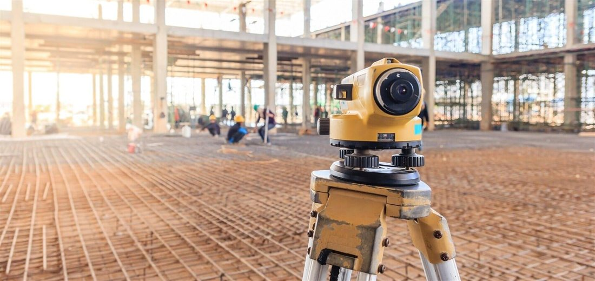
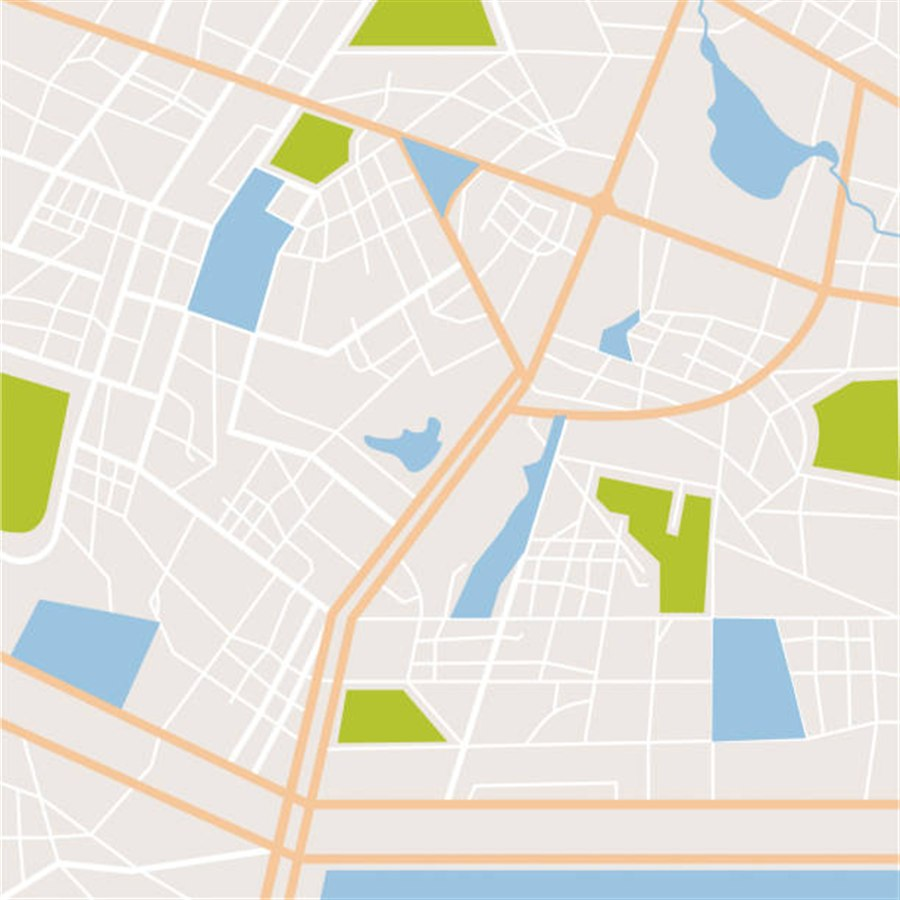

Geodetické služby
geometrické plány, vytyčovanie pozemkov a stavieb, polohopisné a výškopisné merania území, realizačné a kontrolné merania
Ponúkame aj služby v spojitosti s katastrálnym úradom. Poskytujeme geografické informačné systémy a staráme sa o ich zavedenie a chod. Neváhajte nás kontaktovať!
Kontaktujte nás
geometrické plány, vytyčovanie pozemkov a stavieb, polohopisné a výškopisné merania území, realizačné a kontrolné merania

návrhy riešení, dodanie software, tvorba máp pre systémy miest a obcí, vektorizácia a digitalizácia mapových podkladov, tlač
zabezpečenie vyňatí z PPF a LPF, vstupov na cudzie pozemky, prenájmy pozemkov
Od prvého kontaktu až po odovzdanie hotovej dokumentácie.
Kontaktujte nás telefonicky, e-mailom alebo cez formulár a opíšte nám Váš zámer.
Preberieme s Vami detaily a pripravíme cenovú ponuku.
Vykonáme geodetické zameranie a spracujeme potrebné podklady.
Dodáme hotovú dokumentáciu, prípadne ju zavedieme na katastri.